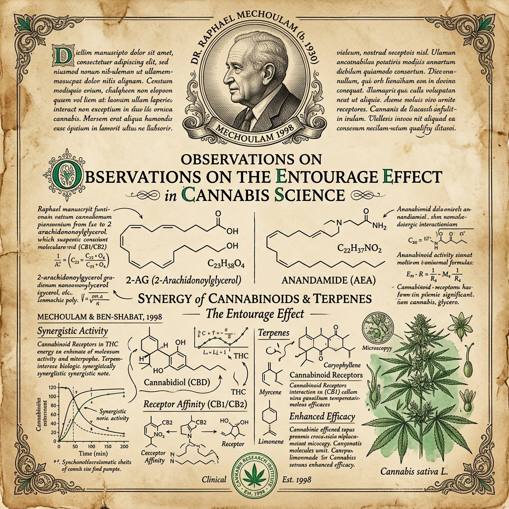

"A sinergia entre os componentes da Cannabis supera consistentemente a eficácia de qualquer componente isolado nos modelos de dor, ansiedade e inflamação estudados." — Russo, E.B. (2011). Taming THC. British Journal of Pharmacology.
O conceito de Efeito Entourage (Entourage Effect) foi formalizado pelo farmacologista israelense Raphael Mechoulam em 1998 e aprofundado por Ethan Russo em 2011. Em essência, afirma que os compostos da Cannabis atuam em concerto — terpenos, flavonoides, canabinoides maiores e menores modulam mutuamente seus efeitos de forma que a soma supera as partes.
Mas como isso se traduz em decisão clínica real? A questão prática que médicos e pacientes enfrentam é: quando vale a pena pagar mais por um Espectro Completo? O Broad Spectrum serve? O Isolado tem lugar?
Entendendo os Três Tipos de Extrato
Preserva toda a matriz fitoquímica natural. Máximo Efeito Entourage. Requer menor dose para resultado equivalente. Preferido em condições inflamatórias crônicas, dor neuropática e distúrbios neurológicos.
Sinergia preservada sem THC. Adequado para profissionais testados no trabalho, gestantes em análise, pacientes que desenvolvem hipersensibilidade ao THC. Efeito Entourage reduzido mas presente.
Sem Efeito Entourage. Curva dose-resposta em sino (paradoxal em altas doses). Caso de uso específico: epilepsia pediátrica (Epidiolex®), onde o controle da dose pura é essencial.
Comparativo de Eficácia por Indicação
Eficácia Relativa por Tipo de Extrato (baseado em meta-análises 2020–2025)
*Isolado superior em epilepsia pediátrica por controle preciso da dose pura. Valores baseados em revisões clínicas; não são ensaios clínicos randomizados diretos.
Protocolo de Decisão Clínica
Árvore de Decisão: Qual Extrato Escolher?
O paciente é testado regularmente para THC no trabalho ou tem restrição legal?
A indicação é epilepsia refratária pediátrica (Dravet, LGS)?
Condição crônica, inflamatória, neuropática ou com múltiplos sintomas?
Paciente hipersensível ao THC ou em início de tratamento conservador?
6 Cenários Clínicos Reais
Condição inflamatória sistêmica + dor neuropática — dois alvos distintos. O CBC anti-inflamatório, o CBG no CB2 imune e o THC residual amplificam a resposta de forma sinérgica.
Restrição profissional ao THC é inegociável. Broad Spectrum com CBG e CBN preserva sinergia parcial sem risco de positivar em teste de urina ou saliva.
Epidiolex® é o único canabinoide FDA-approved. A dose pura e mensurável é imperativa para segurança pediátrica. Aqui, o controle supera o Efeito Entourage.
A tríade CBD + CBN + Mirceno do Espectro Completo é superior a qualquer componente isolado para indução ao sono em pacientes com TEPT, onde pesadelos e fragmentação são os alvos.
THC é o antiemético mais eficaz para náusea por quimioterapia. O Espectro Completo combina essa ação com o efeito analgésico do CBD e canabinoides menores — suporte paliativo completo.
Paciente sem histórico com cannabis: iniciar com Broad Spectrum para avaliar sensibilidade ao CBD e canabinoides menores sem o fator THC. Se resposta insuficiente, upgrade para Full Spectrum.
A Curva Dose-Resposta em Sino do Isolado
Um fenômeno crucial distingue o CBD isolado dos extratos completos: a curva de resposta em sino. Em altas doses, o CBD isolado perde eficácia — e pode reverter parcialmente seu efeito ansiolítico. Isso não ocorre com Espectro Completo, onde a matriz fitoquímica estabiliza a resposta em doses maiores. Na prática, isso significa que doses de CBD isolado acima de ~300mg/dia podem ter desempenho inferior a 100mg de Espectro Completo.
📖 Acervo Clínico Aberto
Todos os nossos dossiês científicos, mapas interativos e ferramentas médicas agora são de acesso 100% gratuito para pacientes e médicos através da Associação.
Acessar Biblioteca Livre